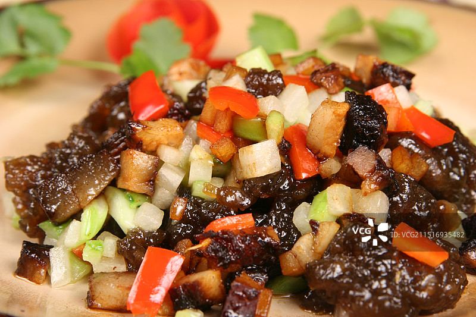
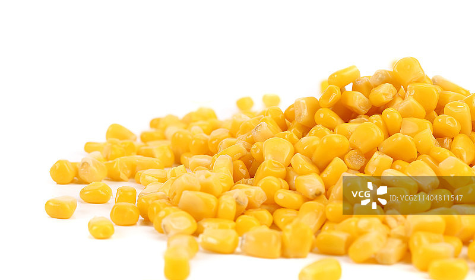
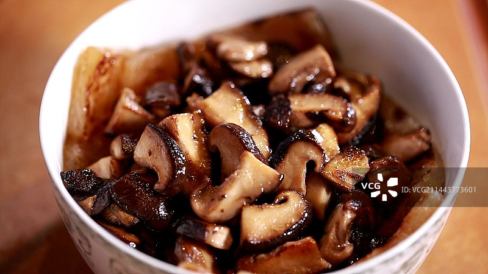
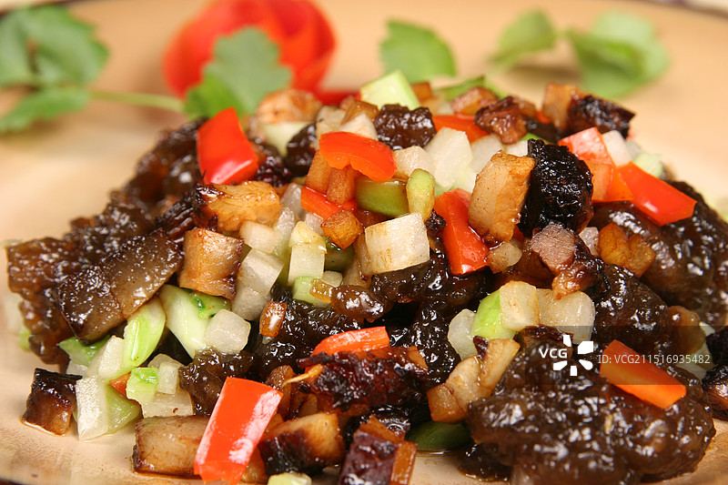
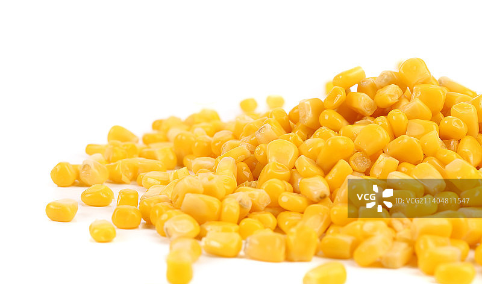
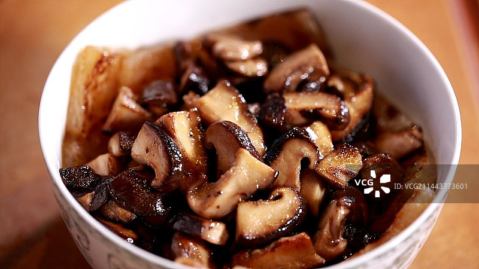
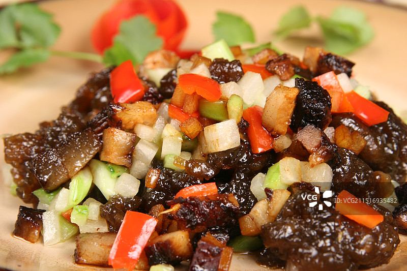
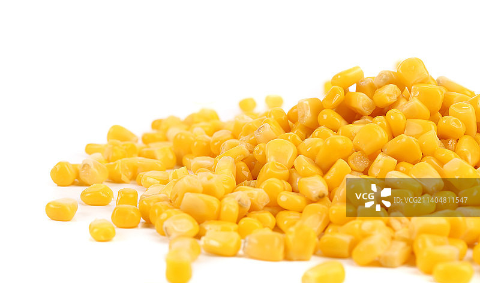
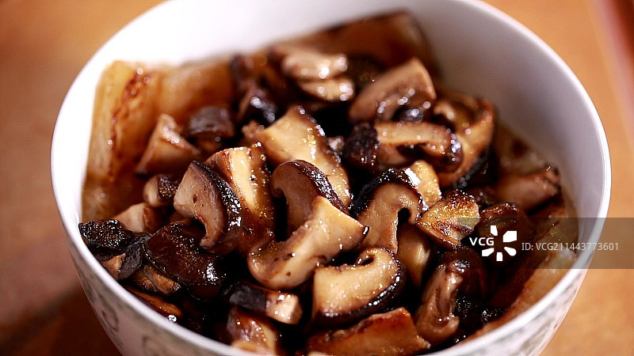

竹筒煨饭是一种具有深厚文化底蕴的传统美食，起源于我国南方少数民族地区。
几百年前，当地村民就利用竹子作为天然的“锅”来烹饪米饭。
这种烹饪方式不仅方便携带，还赋予了米饭独特的竹香，成为山林狩猎或劳作时的便携食物。
竹筒煨饭不仅是美食，更是一种文化传承。
它体现了少数民族与自然和谐共生的生活智慧，同时具有独特的风味和营养价值。
竹子本身富含多种微量元素和维生素，与米饭结合后，不仅口感软糯，还带有竹子的清香。
此外，竹筒煨饭也常用于招待客人，象征着热情好客和对生活的热爱。
竹筒：选择质地坚实、无裂缝的新鲜竹筒，直径约6-7厘米，长度约8-9厘米。
大米或糯米：500克，提前浸泡2-3小时。
配料：可根据个人口味选择，如腊肉、胡萝卜丁、玉米粒、香菇丁、香肠等。
调料：盐、生抽、食用油、胡椒粉等。



竹筒处理：
将竹筒洗净，用盐水浸泡4小时以上，然后用清水煮沸半小时，捞出晾干。
准备米饭和配料：
将浸泡好的大米或糯米沥干水分，与配料混合，加入适量盐、生抽、食用油和胡椒粉调味。
装入竹筒：
将调好味的米饭和配料填入竹筒中，压实，加入适量清水（水位约至竹筒的八分满）。
烹饪：
将竹筒放入烤箱（210℃烤40分钟）或蒸锅中（大火蒸25-30分钟），直至米饭熟透。
食用：
熟后取出竹筒，用刀轻轻敲打竹筒，使米饭与竹壁分离，然后剖开竹筒，即可食用。
竹筒选择：竹筒要厚实且无裂缝，避免在烹饪过程中破裂。
浸泡处理：竹筒需用盐水浸泡并煮沸，以去除杂质并增加竹筒的韧性。
米饭浸泡：大米或糯米需提前浸泡2-3小时，这样煮出的米饭更软糯。
火候控制：如果用明火烤制，需不断翻转竹筒，使其受热均匀。
水量控制：竹筒内的水量不宜过多，一般至竹筒的八分满即可。
竹筒封口：竹筒口可用竹叶或锡纸封住，防止水分流失